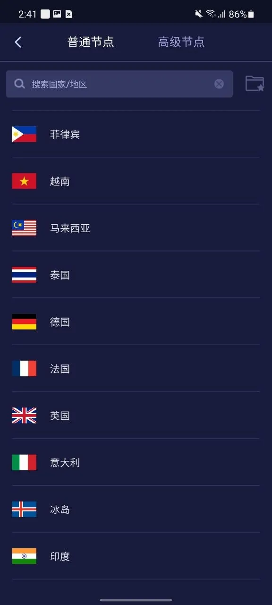
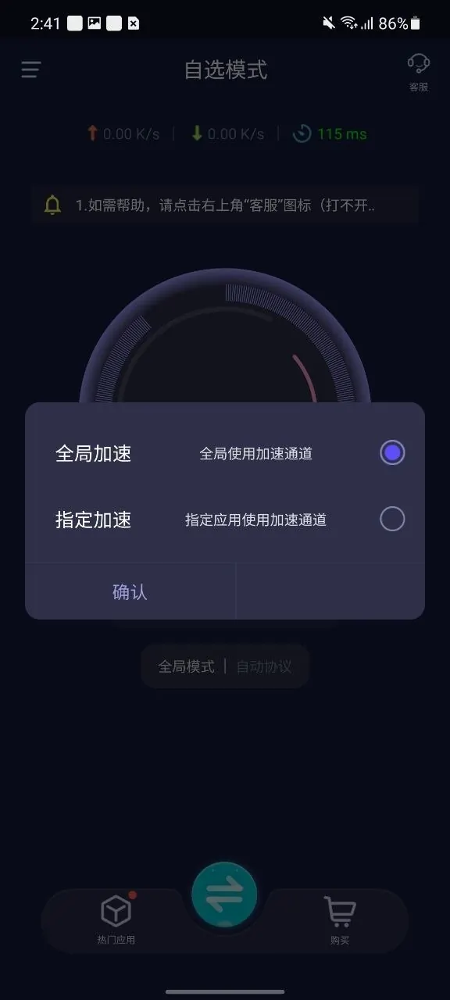

安装后找不到节点？打开客户端主界面的地区或节点入口，先选择普通节点中可用的线路；如果列表显示高级节点，是否可选取决于账号与套餐。选好后返回主界面点击连接。
安装与首次连接
- 使用手机浏览器进入官网，选择 Android 下载。不要从不明论坛或网盘安装所谓的修改版。
- 打开下载完成的 APK。若系统要求允许该下载来源安装应用，请确认安装包来自预期的官网后再按提示操作；安装结束后可关闭该来源的安装权限。
- 启动优途。新用户可按客户端提供的选项体验游客模式；有套餐的用户应登录对应账号。
- 点击节点位置，进入国家或地区列表，选择所需线路。
- 点击“连接”。首次连接如出现 Android VPN 授权提示，在确认应用身份后允许，再检查连接状态。

连接后，怎样选择全局或指定应用加速
在 Android 客户端的加速范围设置中，可以选择“全局加速”或“指定加速”。前者让设备流量走加速通道；后者只处理已选中的应用。若有应用无法访问，先确认它是否被设置为指定加速目标。

APK 无法安装怎么办
- 提示解析包错误：删除不完整的安装文件，从官网重新下载，并核对手机系统兼容要求。
- 提示禁止安装：检查当前浏览器或文件管理器的安装来源权限；不需要永久开放所有来源。
- 安装后打不开：先重启客户端并查看系统是否给出错误提示，不要连续安装来历不明的旧版本。
锁屏后一段时间断开怎么办
不同 Android 品牌的省电选项名称不一样。排查时可以先记住断开前的动作：锁屏、切换到其他应用、切换 Wi-Fi，还是开启省电模式。每次只修改一项设置后重新测试，这样更容易确认原因。
先检查系统是否限制应用在后台运行，再看Android 后台连接排查。如果是账号或套餐异常，请通过产品客服处理。